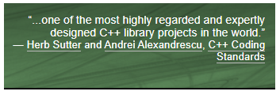

History of Boost
This topic provides an overview of the origins, growth, and impact of Boost on the programming community.
Introduction
Boost is a highly influential and widely used collection of libraries, designed to extend and complement the functionality provided by the C++ Standard Library. Since its original Proposal in 1998, Boost has played a significant role in shaping the evolution of the C++ language and its ecosystem.
Origins
The story of Boost began when Robert Klarer and Beman Dawes discussed the idea at the March 1998 meeting of the C++ Standards Committee in Sophia Antipolis, France. Joined by Dave Abrahams, they convened the first Boost mailing list to facilitate discussions on the creation of high-quality, peer-reviewed libraries for the C++ programming language. At the time, the C++ Standard Library was limited in its functionality, and many developers felt the need for additional libraries to support the growing demands of software development. The name "Boost" was chosen to represent the goal of boosting the C++ language and its library ecosystem to new heights.
-
Dave Abrahams has made extensive contributions to the C++ Standard Library, in particular in the areas of generic programming and standard algorithms, and co-authored Boost.Iterator and Boost.Python. He is also one of the authors of the seminal book C++ Template Metaprogramming, which has inspired many developers to adopt advanced template techniques.
-
The late Beman Dawes made significant contributions to the language, particularly in the area of file systems. He was the original author of the Boost.Filesystem library, which provided robust support for cross-platform file handling and later became the foundation for the
std::filesystemlibrary in C++17. Dawes emphasized the importance of creating a testing culture within Boost and was pivotal in establishing Boost’s peer-review process. -
Robert Klarer is the least publicly documented of the founders, though as an idea’s man he was particularly involved in discussions around best practices for high-quality library development and was instrumental in helping shape the early vision of Boost as a community-driven project.
Early Development
The first few libraries that formed the basis of Boost were created by a group of dedicated and talented C++ programmers. Early libraries included the Boost.SmartPtr library, which provided support for reference counting and garbage collection, and the Boost.Regex library, which added regular expression support to the language. The first official release was in the year 1999, and contained 24 libraries. Version numbers were started in December 1999, with version 1.10.3.
Boost quickly gained traction and attracted more contributors who shared a common vision of improving the C++ language through high-quality, portable, and reusable code.
Peer Review Process
One of the defining characteristics of Boost is its strict peer review process. Before a library is accepted into Boost, it must undergo a thorough review by other experienced C++ developers. This process ensures that only high-quality libraries, adhering to the best programming practices, are included in the collection. The peer review process not only maintains the quality of Boost but also fosters a sense of community and encourages collaboration among its contributors.
Influence on the C++ Language and Community
Boost has had a profound impact on the C++ language and its community. Many of the libraries and concepts introduced by Boost have been adopted into the C++ Standard Library, including smart pointers, regular expressions, and the Boost.Lambda function syntax. Boost has also been a fertile ground for experimenting with new ideas and techniques, which have later made their way into the C++ language itself, such as Boost.TypeTraits and Boost.Mpl.
Developer Conference
BoostCon, initiated in 2007, was a conference dedicated to the discussion and improvement of both Boost libraries and C++ software development in general. In 2012, BoostCon was rebranded as C++ Now (https://cppnow.org/) to reflect a broader scope. While Boost libraries remained a crucial part of the discussion, the conference expanded to cover popular and advanced C++ techniques.
C++ Now featured topics ranging from "Building a Modern C++ HTTP Server with Boost.Beast" and "Exploring New Functionalities in Boost.Geometry", to "C++in Game Development: Best Practices" and "Advanced Template Metaprogramming Techniques", among many other presentations.
The conference is primarily held in May, in the picturesque and tranquil setting of Aspen, Colorado. The promotion of the location includes the warning "Mild-mannered black bears live in the area. Please close doors behind you in the evenings."
Boost maintainers, contributors, and users often participate in the conference, sharing their expertise, discussing best practices, and exploring new directions for Boost libraries. The conference has a reputation for interruptions and comments from the audience - it is very much a collaborative conference!
Migration to Git
Boost libraries transitioned their source code management from Subversion (SVN), and issue tracking from Trac, to Git, and GitHub Issues, throughout 2013-2014.
This migration was in line with broader trends in open-source software development. Git and GitHub appeared to offer a more flexible and collaborative environment, and many open-source projects started adopting them to manage their source code and facilitate community contributions.
By transitioning to these platforms, Boost aimed to improve its development workflow, make it easier for new contributors to get involved, and leverage the powerful collaboration features offered by GitHub. However, as with many major changes, there was a lot of discussion on the issues at the time, some favorable and some not so much. For example (from mailing list archives):
A Timeline of Boost Exclusivity
While many Boost libraries have been incorporated into the C++ Standard Library, most others remain exclusive to Boost, and are highly regarded for their capabilities and performance. Some of these noteworthy libraries include:
-
Boost.Graph : An extensive library for graph data structures and algorithms, enabling developers to work with graphs and network structures, while providing efficient implementations of popular graph algorithms like Dijkstra’s, Kruskal’s, and more. Developed by Jeremy Siek, Lie-Quan Lee and Andrew Lumsdaine of Indiana University and released in September 2000.
-
Boost.Spirit : A powerful and flexible parser and generator framework, which uses expression templates and template metaprogramming to create parsers at compile-time. This results in efficient and type-safe parsing code. Developed by Joel de Guzman and Hartmut Kaiser and added to Boost March 2003.
-
Boost.Asio : A cross-platform library for network and low-level I/O programming, offering a consistent asynchronous model that allows developers to write efficient and highly-scalable applications. Developed by Christopher Kohlhoff and added to Boost March 2008.
-
Boost.Geometry : A library providing a collection of algorithms and data structures for working with geometrical objects, such as points, lines, polygons, and more. It also supports spatial indexing, coordinate system transformations, and various distance calculations. Developed by Barend Gehrels, Bruno Lalande, Mateusz Loskot, Adam Wulkiewicz, Menelaos Karavelas and Vissarion Fisikopoulos and added to Boost July 2011.
-
Boost.Coroutine : A library providing templates for generalized subroutines which allow for suspending and resuming execution at certain locations. The idea is to enable cooperative programming. Developed by Oliver Kowalke and added to Boost February 2013.
-
Boost.Hana : A modern metaprogramming library for C++ that employs cutting-edge C++ features to facilitate powerful and expressive metaprogramming techniques, such as heterogeneous containers, compile-time algorithms, and type introspection. Developed by Louis Dionne and added to Boost May 2016.
-
Boost.Mp11 : A metaprogramming library for compile-time manipulation of data structures that contain types, based on template aliases and variadic templates. Developed by Peter Dimov and added to Boost in December 2017.
-
Boost.Json : A JSON library for encoding, decoding, and manipulating JSON data. Developed by Vinnie Falco, Krystian Stasiowski and Dmitry Arkhipov and added to Boost in December 2020.
-
Boost.Describe : This reflection library enables authors of user-defined types (enums, structs and classes) to describe their enumerators, base classes, data members and member functions. This information can later be queried by other code portions, possibly written by a different author, using the supplied primitives. Developed by Peter Dimov and added to Boost in August 2021.
These libraries, among many others, showcase the value and versatility of Boost in providing advanced functionality beyond the scope of the C++ Standard Library. Refer to Boost Version History for a chronology of releases since 1999.
As well as the Common and Advanced scenarios highlighted in this documentation, Boost libraries are used in highly specialized applications, ranging from probability theory to astronomy to mass spectroscopy. Open source isn’t just for nerds and researchers. Real world programming challenges, irrespective of whether they are open or closed source, can benefit enormously from the thought and experience that has gone into the libraries.
The source code is always distributed as open source, and released under the Boost Software License, which allows anyone to use, modify, and distribute the libraries for free. The libraries are platform independent and support most popular compilers, as well as many that are less well known.
Current Status
Boost has evolved into a widely used and influential collection of over 180 libraries since its inception in 1998. Currently, the Boost mission is threefold:
-
Develop high-quality, expert-reviewed, open-source C++ libraries.
-
Incubate C++ Standard Library enhancements.
-
Advance and disseminate C++ software development best practices. This is accomplished by facilitating C++ community engagement, providing necessary financial/legal support, and breaking rare directional decision-making deadlocks while upholding our shared values of engineering excellence, technocratic leadership, and a federated library authorship model.
The formation of the CppAlliance brought an organizational structure to Boost. It provides legal and financial oversight, manages assets like the Boost trademark, and helps fund the hosting infrastructure.
The Get Boost download button actually originated by replacing the word ALARMA from a Spanish operational manual photograph.

Early praise from well-known C++ gurus in their book: C++ Coding Standards: 101 Rules, Guidelines, and Best Practices, published in 2004".
See Also
-
The C++ Alliance on GitHub